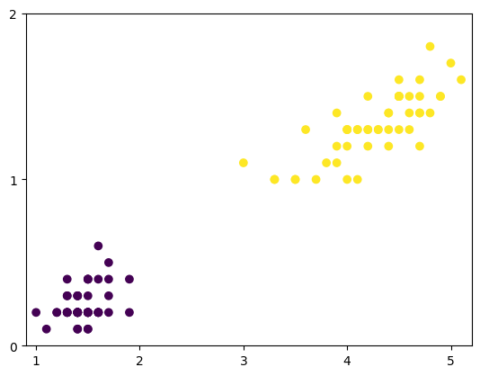
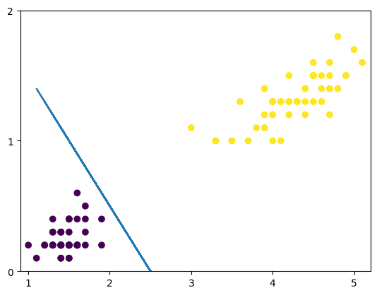
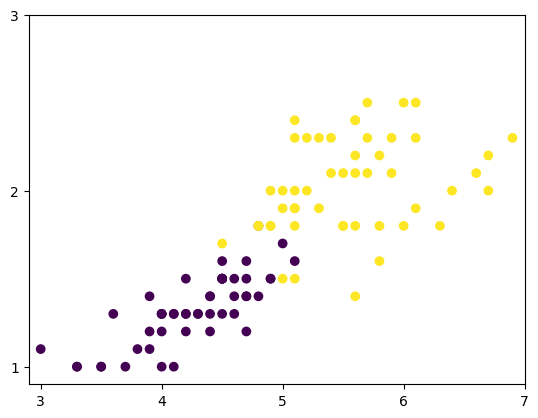
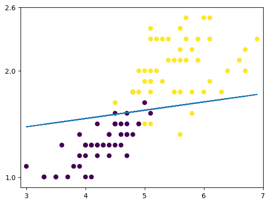
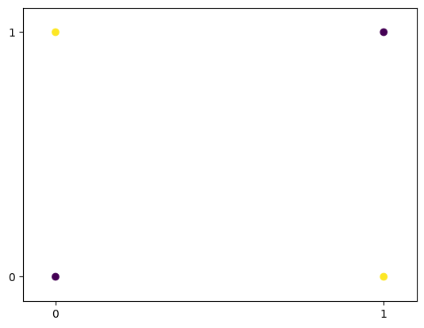

O Perceptron#
https://scikit-learn.org/stable/modules/generated/sklearn.linear_model.Perceptron.html
É um modelo linear para classificação binária
Só é possível fazer a separação se os dados forem linearmente separáveis
O seu aprendizado é feito através do cálculo dos pesos e vieses
Seu funcionamento é baseado no funcionamento do neurônio humano:
Foi proposto em 1943 por McCulloch e Pitts e implementado pela primeira vez em 1958 por Frank Rosenblatt e segundo o The New York Times:
o perceptron é “o embrião de um computador eletrônico que [a Marinha] espera que seja capaz de andar, falar, ver, escrever, reproduzir-se e ter consciência de sua existência”
Devido a sua limitação de prever padrões simples como o OU exclusivo (XOR), ficou um tempo “congelado” mas foi retomado fortemente com o avanço do Deep Learning
# Importando as bibliotecas
import pandas as pd
import matplotlib.pyplot as plt
import numpy as np
Podemos considerar o dataset iris
# Importando o dataset iris
from sklearn.datasets import load_iris
# Determinando o X e y
X_iris,y_iris = load_iris(return_X_y=True, as_frame=True)
# Visualizando
X_iris.head(3)
| sepal length (cm) | sepal width (cm) | petal length (cm) | petal width (cm) | |
|---|---|---|---|---|
| 0 | 5.1 | 3.5 | 1.4 | 0.2 |
| 1 | 4.9 | 3.0 | 1.4 | 0.2 |
| 2 | 4.7 | 3.2 | 1.3 | 0.2 |
# Selecionando apenas as colunas de pétala e o target 0 e 1
X = X_iris.loc[y_iris.isin([0,1]),['petal length (cm)','petal width (cm)']]
y = y_iris.loc[y_iris.isin([0,1])]
# Verificando o valor de y
y.value_counts()
| count | |
|---|---|
| target | |
| 0 | 50 |
| 1 | 50 |
# Observando graficamente os dados
fig, ax = plt.subplots()
ax.scatter(X.iloc[:,0],X.iloc[:,1],c=y)
ax.set(xlim=(0.9,5.2),xticks=[1,2,3,4,5],
ylim=(0,2),yticks=[0,1,2])
plt.show()

Para esse caso, teremos como mostrado na figura abaixo:
Podemos utilizar o perceptron para separar esses dados
# Separando em treino e teste
from sklearn.model_selection import train_test_split
X_train, X_test, y_train, y_test = train_test_split(X, y, test_size=0.33, random_state=42)
# Importando o perceptron
from sklearn.linear_model import Perceptron
# Criando o classificador
clf = Perceptron(tol=1e-3, random_state=0,eta0=0.1)
# Fazendo o fit com os dados
clf = clf.fit(X_train, y_train)
# Fazendo a previsão
y_pred = clf.predict(X_test)
Podemos utilizar a matriz de confusão para avaliar esse modelo
# Importando a matriz de confusão
from sklearn.metrics import confusion_matrix
# Avaliando o modelo
confusion_matrix(y_test,y_pred)
array([[19, 0],
[ 0, 14]])
Entendendo o que o perceptron fez
# Verificando o coef_
clf.coef_
array([[0.08, 0.08]])
# E o intercept
clf.intercept_
array([-0.2])
# Podemos escrever w1, w2 e w0 como
w1 = round(clf.coef_[0][0],2)
w2 = round(clf.coef_[0][1],2)
w0 = clf.intercept_
print(w1,w2,w0)
0.08 0.08 [-0.2]
O resultado será como mostrado na figura:
# Adicionando essa reta no gráfico
fig, ax = plt.subplots()
ax.scatter(X_train.iloc[:,0],X_train.iloc[:,1],c=y_train)
ax.plot(X_train.iloc[:,0],(-w1*X_train.iloc[:,0]-w0)/w2)
ax.scatter(X_test.iloc[:,0],X_test.iloc[:,1],c=y_test)
ax.set(xlim=(0.9,5.2),xticks=[1,2,3,4,5],
ylim=(0,2),yticks=[0,1,2])
plt.show()

O que acontece se tentarmos separar as classes 1 e 2?
# Agora considerando as classes 1 e 2
X = X_iris.loc[y_iris.isin([1,2]),['petal length (cm)','petal width (cm)']]
y = y_iris.loc[y_iris.isin([1,2])]
# Observando graficamente os dados
fig, ax = plt.subplots()
ax.scatter(X.iloc[:,0],X.iloc[:,1],c=y)
ax.set(xlim=(2.9,7),xticks=[3,4,5,6,7],
ylim=(0.9,3),yticks=[1,2,3])
plt.show()

# Separando em treino e teste
from sklearn.model_selection import train_test_split
X_train, X_test, y_train, y_test = train_test_split(X, y, test_size=0.33, random_state=42)
# Criando um novo classificador
clf = Perceptron(tol=1e-3, random_state=0,eta0=0.1)
# Fazendo o fit com os dados
clf = clf.fit(X_train, y_train)
# Fazendo a previsão
y_pred = clf.predict(X_test)
# Avaliando o modelo
confusion_matrix(y_test,y_pred)
array([[19, 0],
[ 2, 12]])
# Podemos escrever w1, w2 e w0 como
w1 = round(clf.coef_[0][0],2)
w2 = round(clf.coef_[0][1],2)
w0 = clf.intercept_
print(w1,w2,w0)
-0.24 3.07 [-3.8]
# Adicionando essa reta no gráfico
fig, ax = plt.subplots()
ax.scatter(X_train.iloc[:,0],X_train.iloc[:,1],c=y_train)
ax.plot(X_train.iloc[:,0],(-w1*X_train.iloc[:,0]-w0)/w2)
ax.scatter(X_test.iloc[:,0],X_test.iloc[:,1],c=y_test)
ax.set(xlim=(2.9,7),xticks=[3,4,5,6,7],
ylim=(0.9,2.6),yticks=[1,2,2.6])
plt.show()

O perceptron só consegue separar dados linearmente separáveis
Analisando o problema do OR e do XOR#
# Vamos considerar inicialmente os dados abaixo
dados = pd.DataFrame({
'x1': [0,0,1,1]
,'x2': [0,1,0,1]
,'y': [0,1,1,0]
})
# Visualizando a base
dados
| x1 | x2 | y | |
|---|---|---|---|
| 0 | 0 | 0 | 0 |
| 1 | 0 | 1 | 1 |
| 2 | 1 | 0 | 1 |
| 3 | 1 | 1 | 0 |
# E observando graficamente
fig, ax = plt.subplots()
ax.scatter(dados.x1,dados.x2,c=dados.y)
ax.set(xlim=[-0.1,1.1],xticks=[0,1],
ylim=[-0.1,1.1],yticks=[0,1])
plt.show()

# Criando o classificador
clf = Perceptron(tol=1e-3, random_state=0,eta0=0.1)
# Selecionando X e y
x = dados[["x1","x2"]]
y = dados.y
# Fazendo o fit com os dados
clf = clf.fit(x,y)
# Fazendo a previsão
y_pred = clf.predict(x)
# Avaliando o modelo
confusion_matrix(y,y_pred)
array([[2, 0],
[2, 0]])
# Verificando o coef_
array([[0., 0.]])
# Verificando o intercept_
clf.coef_
array([[0., 0.]])
# Podemos escrever w1, w2 e w0 como
clf.intercept_
array([0.])
w1 = round(clf.coef_[0][0],2)
w2 = round(clf.coef_[0][1],2)
w0 = clf.intercept_
print(w1,w2,w0)
0.0 0.0 [0.]
# Visualizando esse resultado graficamente
fig, ax = plt.subplots()
# Criando um array de x
x_perc = np.linspace(-0.1,1,100)
# Agora calculando o y
y_perc = (-w1*x_perc-w0)/w2
ax.scatter(dados.x1,dados.x2,c=dados.y)
ax.plot(x_perc,y_perc,'r')
ax.set(xlim=[-0.1,1.1],xticks=[0,1],
ylim=[-0.1,1.1],yticks=[0,1])
plt.show()
<ipython-input-46-3847935731>:8: RuntimeWarning: invalid value encountered in divide
y_perc = (-w1*x_perc-w0)/w2
Agora voltando e fazendo para o OU Exclusivo
Apesar de conseguir separar bem casos lineares, o perceptron não foi eficiente em um caso “simples” como o OU Exclusivo, colocando em cheque a sua funcionalidade durante um bom tempo
Até que o ganho do poder computacional e o aumento na quantidade de dados permitiram conectar vários perceptrons em várias camadas